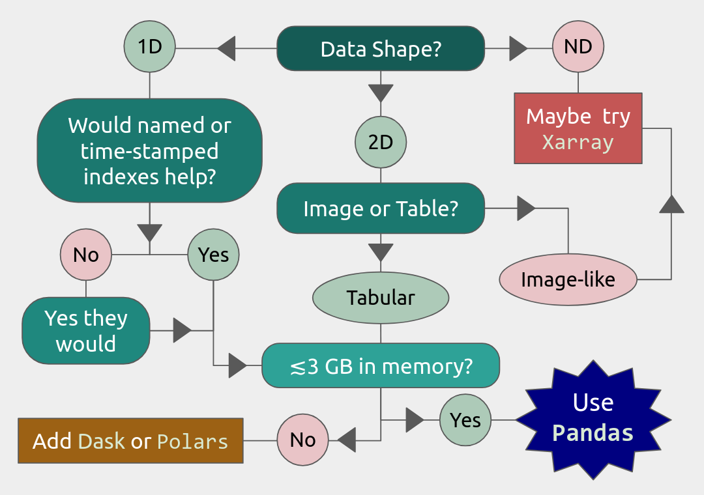

Intro to Pandas on HPC
Objectives
You will learn how to
Find and load Pandas on your local HPC resource
Load data into DataFrames in whole or in part
Estimate the size of your data in memory
Reduce your data size by converting to appropriate memory-saving data types
Run standard functions with multi-threading using Numba
Load and write out-of-memory files with chunking.
It is recommended that you do exercises and other code experimentation for this session in Jupyter Lab unless otherwise advised, but it is ultimately up to you.
Note
This course focuses on functions and workflows specific to Pandas usage on an HPC cluster. Basic functionality will only be discussed briefly. For a more in-depth introduction to the Pandas library in general, NAISS offers a different course, “An Introduction to Pandas for Data Science.”
Pandas, short for PANel Data AnalysiS, is a Python data library for cleaning, organizing, and statistically analyzing moderately large (\(\lesssim3\) GiB) data sets. It was originally developed for analyzing and modelling financial records (panel data) over time, and has since expanded into a package rivaling SciPy in the number and complexity of available functions. Pandas offers:
Explicit, automatic data alignment: all entries have corresponding row and column labels/indexes.
Easy methods to add, remove, transform, compare, broadcast, and aggregate data within and across data structures.
Data structures that support any mix of numerical, string, list, Boolean, and datetime datatypes.
I/O interfaces that support a wide variety of text, binary, and database formats, including Excel, JSON, HDF5, NetCDF, and SQLite.
Hundreds of built-in functions for cleaning, organizing, and statistical analysis, plus support for user-defined functions.
A simple interface with the Seaborn plotting library, and increasingly also Matplotlib.
Easy multi-threading with Numba.
Limitations. Pandas alone has somewhat limited support for parallelization, N-dimensional data structures, and datasets much larger than 3 GiB. Fortunately, there are packages like dask and polars that can help with large data sets. In particular, dask will be covered tomorrow in the Parallel Computing section of this course. There is also the xarray package that provides many similar functions to Pandas for higher-dimensional data structures, but that is outside the scope of this workshop.
Load and Run
Pandas has been part of the SciPy-bundle module (which also contains NumPy) since 2020, so at most HPC resources, you should use ml spider SciPy-bundle to see which versions are available and how to load them.
Important
Pandas requires Python 3.8.x and newer. Do not use SciPy-bundles for Python 2.7.x!
Some facilities also have Anaconda, which typically includes Pandas, JupyterLab, NumPy, SciPy, and many other popular packages. However, if there is a Python package you want that is not included, you will typically have to build your own environment to install it, and extra steps may be required to use that conda environment in a development tool like Jupyter Lab.
Important
For this session, you should load
ml GCC/12.3.0 Python/3.11.3 SciPy-bundle/2023.07 matplotlib/3.7.2 Tkinter/3.11.3
As of 27-11-2024, the output of ml spider SciPy-bundle on Kebnekaise is:
----------------------------------------------------------------------------
SciPy-bundle:
----------------------------------------------------------------------------
Description:
Bundle of Python packages for scientific software
Versions:
SciPy-bundle/2019.03
SciPy-bundle/2019.10-Python-2.7.16
SciPy-bundle/2019.10-Python-3.7.4
SciPy-bundle/2020.03-Python-2.7.18
SciPy-bundle/2020.03-Python-3.8.2
SciPy-bundle/2020.11-Python-2.7.18
SciPy-bundle/2020.11
SciPy-bundle/2021.05
SciPy-bundle/2021.10-Python-2.7.18
SciPy-bundle/2021.10
SciPy-bundle/2022.05
SciPy-bundle/2023.02
SciPy-bundle/2023.07-Python-3.8.6
SciPy-bundle/2023.07
SciPy-bundle/2023.11
----------------------------------------------------------------------------
For detailed information about a specific "SciPy-bundle" package (including how to load the modules) use the module's full name.
Note that names that have a trailing (E) are extensions provided by other modules.
For example:
$ module spider SciPy-bundle/2023.11
----------------------------------------------------------------------------
Important
For this session, you should load
ml GCC/13.2.0 Python/3.11.5 SciPy-bundle/2023.11 matplotlib/3.8.2
On the LUNARC HPC Desktop, all On-Demand versions of Jupyter and Spyder load Pandas, NumPy, SciPy, Matplotlib, Seaborn, and many other Python packages automatically, so you don’t need to load any modules.
If you work at the command line and choose not to use Anaconda3, you will need to load a SciPy-bundle to access Pandas. Use ml spider SciPy-bundle to see which versions are available, which Python versions they depend on, and how to load them.
Important
Pandas requires Python 3.8.x and newer. Do not use SciPy-bundles for Python 2.7.x!
As of 10-11-2025, the output of ml spider SciPy-bundle on Cosmos is:
----------------------------------------------------------------------------
SciPy-bundle:
----------------------------------------------------------------------------
Description:
Bundle of Python packages for scientific software
Versions:
SciPy-bundle/2020.11-Python-2.7.18
SciPy-bundle/2020.11
SciPy-bundle/2021.05
SciPy-bundle/2021.10-Python-2.7.18
SciPy-bundle/2021.10
SciPy-bundle/2022.05
SciPy-bundle/2023.02
SciPy-bundle/2023.07
SciPy-bundle/2023.11
SciPy-bundle/2024.05
----------------------------------------------------------------------------
For detailed information about a specific "SciPy-bundle" package (including ho
w to load the modules) use the module's full name.
Note that names that have a trailing (E) are extensions provided by other modu
les.
For example:
$ module spider SciPy-bundle/2024.05
----------------------------------------------------------------------------
Important
For this session, you should load
module load SciPy-bundle/2024.05-gfbf-2024a
That module includes Pandas, NumPy, SciPy, etc. If you want to plot any of the data used in the examples and exercises, you will need to load matplotlib/3.9.2-gfbf-2024a separately.
Want to use Jupyter? Follow: https://uppmax.github.io/HPC-python/day2/IDEs_cmd.html#principles
Important
For this session, you should load
module load buildtool-easybuild/4.8.0-hpce082752a2 GCC/13.2.0 Python/3.11.5 SciPy-bundle/2023.11 JupyterLab/4.2.0
Pandas, like NumPy, has typically been part of the SciPy-bundle module since 2020. Use ml spider SciPy-bundle to see which versions are available and how to load them.
Jupyter Lab is only available on Dardel via ThinLinc.
As there are only 30 ThinLinc licenses available at this time, we recommend that you work on the exercises with a local installation on a personal computer.
Do not trust that a ThinLinc session will be available or that On-Demand applications run therein will start in time for you to keep up (it is not unusual for wait times to be longer than the requested walltime).
The exercises were written to work on a regular laptop. If you must work on Dardel, follow the steps below, and view the exercises and solutions in the GitHub repository (they should render correctly).
Important
For this session, you could load
ml cray-python/3.11.7On Dardel, all cray-python versions include NumPy, SciPy, and Pandas, and do not require any prerequisites. Matplotlib is separate and will have to be loaded using
ml PDC/23.12 matplotlib/3.8.2-cpeGNU-23.12, where PDC/23.12 is a prerequisite. The versions available for for both cray-python and matplotlib are limited because it is generally assumed that most users will build their own environments, but the installed versions are fine for this course.
ALTERNATIVE IF THINLINC IS AVAILABLE
Start Jupyter from the Menu and it will work!
Default Anaconda 3 has all packages needed for this lesson
- OR USE SPYDER:
start interactive session
salloc --ntasks=4 -t 0:30:00 -p shared --qos=normal -A naiss2025-22-934 salloc: Pending job allocation 9102757 salloc: job 9102757 queued and waiting for resources salloc: job 9102757 has been allocated resources salloc: Granted job allocation 9102757 salloc: Waiting for resource configuration salloc: Nodes nid001057 are ready for job
We need to ssh to the specific node, like
ssh nid001057Use the conda env you created in Exercise 2 in Use isolated environments
ml PDC/24.11 ml miniconda3/25.3.1-1-cpeGNU-24.11 export CONDA_ENVS_PATH="/cfs/klemming/projects/supr/courses-fall-2025/$USER/" export CONDA_PKG_DIRS="/cfs/klemming/projects/supr/courses-fall-2025/$USER/" source activate spyder-env # If needed, install the packages here by: "conda install matplotlib pandas seaborn" spyder &
Important
For this session, you should use the Alvis portal: https://alvis.c3se.chalmers.se/public/root/
Log in
Ask for Desktop (Compute) in left-hand side menu. Do not choose “Jupyter”, since it gives you a TensorFlow environment with Python 3.8.
Open a Terminal and load the following software modules
ml matplotlib/3.9.2-gfbf-2024a
ml Jupyter-bundle/20250530-GCCcore-13.3.0
This will load SciPy-bundle on the fly!
Pandas, like NumPy, has typically been part of the SciPy-bundle module since 2020. Use
ml spider SciPy-bundleto see which versions are available and how to load them.Then start jupyter-lab and a web browser will automatically open
jupyter-lab
Note
2025 versions of SciPy-bundle are not widely installed or recommended, because numerical stability tests are failing during installation.
To know if Pandas is the right tool for your job, you can consult the flowchart below.
{kind=link}
We will also have a short session after this on plotting with Seaborn, a package for easily making publication-ready statistical plots with Pandas data structures.
Introductory Topics (Review)
Important Data Types and Object Classes
The main object classes of Pandas are Series and DataFrame. There is also a separate object class called Index for the row indexes/labels and column labels, if applicable. Data that you load from file will mainly be loaded into either Series or DataFrames. Indexes are typically extracted later if needed.
pandas.Series(data, index=None, name=None, ...)instantiates a 1D array with customizable indexes (labels) attached to every entry for easy access, and optionally a name for later addition to a DataFrame as a column.Indexes can be numbers (integer or float), strings, datetime objects, or even tuples. The default is 0-based integer indexing. Indexes are also a Pandas data type (the data type of the row and column labels)
pandas.DataFrame(data, columns=None, index=None, ...)instantiates a 2D array where every column is a Series. All entries are accessible by column and row labels/indexes.Any function that works with a DataFrame will work with a Series unless the function specifically requires column arguments.
Column labels and row indexes/labels can be safely (re)assigned as needed.
For the rest of this lesson, example DataFrames will be abbreviated as df in code snippets (and example Series, if they appear, will be abbreviated as ser).
Important Attributes Cheatsheet
The API reference in the official Pandas documentation shows hundreds of methods and attributes for Series and DataFrames. The following is a very brief list of the most important attributes and what they output.
df.indexreturns a list of row labels as an array of Pandas datatypeIndexdf.columnsreturns a list of column labels as an array of Pandas datatypeIndexdf.dtypeslists datatypes by columndf.shapegives a tuple of the number of rows and columns indfdf.valuesreturnsdfconverted to a NumPy array (also applicable todf.columnsanddf.index)
Pandas assigns the data in a Series and each column of a DataFrame a datatype based on built-in or NumPy datatypes or other formatting cues. Important Pandas datatypes include the following.
Numerical data are stored as
float64orint64. You can convert to 32-, 16-, and even 8-bit versions of either to save memory.The
objectdatatype stores any of the built-in typesstr,Bool,list,tuple, and mixed data types. Malformed data are also often designated asobjecttype.A common indication that you need to clean your data is finding a column that you expected to be numeric assigned a datatype of
object.
Pandas has many functions devoted to time series, so there are several datatypes—
datetime,timedelta, andperiod. The first two are based on NumPy data types of the same name , andperiodis a time-interval type specified by a starting datetime and a recurrence rate. Unfortunately, we won’t have time to cover these at depth.
There are also specialized datatypes for, e.g. saving on memory or performing windowed operations, including
Categoricalis a set-like datatype for non-numeric data with few unique values. The unique values are stored in the attribute.categories, that are mapped to a number of low-bit-size integers, and those integers replace the actual values in the DataFrame as it is stored in memory, which can save a lot on memory usage.Intervalis a datatype for tuples of bin edges, all of which must be open or closed on the same sides, usually output by Pandas discretizing functions.Sparse[float64, <omitted>]is a datatype based on the SciPy sparse matrices, where<omitted>can be NaN, 0, or any other missing value placeholder. This placeholder value is stored in the datatype, and the DataFrame itself is compressed in memory by not storing anything at the coordinates of the missing values.
This is far from an exhaustive list.
Loading/Creating DataFrames
Most of the time, Series and DataFrames will be loaded from files, not made from scratch. To review, the following table lists I/O functions for a few of the most common data formats; the full table with links to the documentation pages for each function can be found here. Input and output functions are sometimes called readers and writers, respectively. The read_csv() is by far the most commonly used since it can read any text file with a specified delimiter (comma, tab, or otherwise).
Typ1e |
Data Description |
Reader |
Writer |
|---|---|---|---|
text |
CSV / ASCII text with standard delimiter |
|
|
text |
JSON |
|
|
SQL |
SQLite table or query |
|
|
binary |
MS Excel/OpenDocument |
|
|
binary |
HDF5 Format |
|
|
binary |
Apache Parquet |
|
|
Most of these functions have several dozen possible kwargs. It is left to the reader to determine which kwargs are needed. Most kwargs in a given reader function also appear in the corresponding writer function, and serve the same purpose.
Tip
Most of the text readers above, and the Excel reader, have kwargs that let you choose to load only some of the data, namely nrows and usecols.
nrowslets you read in only the first n rows with their column headers, where $n ge 0$. If $n=0$, only the column names will be returned. This is a very efficient way to inspect large datasets.usecolsis the same as in NumPy’sloadtxt()andgenfromtxt()functions, i.e., it selects columns by position index and returns a data structure containing only those columns of data.
Tip
Most of the above reader/writer functions were chosen not only because they are commonly used, but because, apart from read_excel(), these support chunking for data sets that are larger than memory. Chunking is the act of performing operations, including I/O, on fixed-row-count subsets of the data, assuming each row is independent. For more information see the documentation on using chunking
In most reader functions, including index_col=0 sets the first column as the row labels, and the first row is assumed to contain the list of column names by default. If you forget to set one of the columns as the list of row indexes during import, you can do it later with df.set_index('column_name').
Exercise
Open your preferred IDE and load the provided file exoplanets_5250_EarthUnits_fixed.csv into DataFrame df (optionally, you can set the first column to be the indices). Then, save df to a text (.txt) file with a tab (\t) separator.
Solution :class: dropdown
import pandas as pd
df = pd.read_csv('exoplanets_5250_EarthUnits_fixed.csv',index_col=0)
df.to_csv('./docs/day3/exoplanets_5250_EarthUnits.txt', sep='\t',index=True)
Creating DataFrames in Python. Building a DataFrame or Series from scratch is also easy. Lists and arrays can be converted directly to Series and DataFrames, respectively.
Both
pd.Series()andpd.DataFrame()have anindexkwarg to assign a list of numbers, names, times, or other hashable keys to each row.You can use the
columnskwarg inpd.DataFrame()to assign a list of names to the columns of the table. The equivalent forpd.Series()is justname, which only takes a single value and doesn’t do anything unless you plan to join that Series to a larger DataFrame.Dictionaries and record arrays can be converted to DataFrames with
pd.DataFrame.from_dict(myDict)andpd.DataFrame.from_records(myRecArray), respectively, and the keys will automatically be converted to column labels.
Exercise
In your preferred IDE or at the command line, create a DataFrame with 4 rows labeled ['w','x','y','z'] and 3 columns labeled ['a','b','c']. The contents of the cells are up to you. Print the result and verify that it has the right shape.
Solution :class: dropdown
import numpy as np
import pandas as pd
df = pd.DataFrame( np.arange(1,13).reshape((4,3)), index=['w','x','y','z'], columns=['a','b','c'] )
print(df)
a b c
w 1 2 3
x 4 5 6
y 7 8 9
z 10 11 12
It is also possible (and occasionally necessary) to convert DataFrames and Series to NumPy arrays, dictionaries, record arrays, or strings with the methods .to_numpy(), .to_dict(), to_records(), and to_string(), respectively.
Inspection and Memory Usage
The main data inspection functions for DataFrames (and Series) are as follows:
df.head()(ordf.tail()) prints first (or last) 5 rows of data with row and column labels, or accepts an integer argument to print a different number of rows.df.info()prints the number of rows with their first and last index values; titles, index numbers, valid data counts, and datatypes of columns; and the estimated size ofdfin memory. Note: do not rely on this memory estimate if your dataframe contains non-numeric data (see below).df.describe()prints summary statistics for all the numerical columns indf.df.nunique()prints counts of the unique values in each column.df.value_counts()prints each unique value and the number of of occurrences for every combination of row and column values for as many of each as are selected (usually applied to just a couple of columns at a time at most)df.memory_usage()returns the estimated memory usage per column (see important notes below).
Important
The memory_usage() Function
df.memory_usage(deep=False) returns the estimated memory usage of each column, but with the default deep=False, this includes the sizes of pointers to non-numeric data, but not the full sizes of strings and other non-numeric data. The sum of these per-column estimates is the same as what is reported by df.info(), which is an significant underestimate. This is because numeric columns are fixed width in memory and can be stored contiguously, but object-type columns are variable in size, so only pointers can be stored at the location of the main DataFrame in memory. The strings that those pointers refer to are kept elsewhere. With deep=True, the sizes of strings and other non-numeric data are factored in, giving a much better estimate of the total size of df in memory.
import numpy as np
import pandas as pd
df = pd.read_csv('./docs/day3/exoplanets_5250_EarthUnits.csv',index_col=0)
print(df.info())
print('\n',df.memory_usage())
print('\n Compare: \n',df.memory_usage(deep=True))
<class 'pandas.core.frame.DataFrame'>
Index: 5250 entries, 11 Comae Berenices b to YZ Ceti d
Data columns (total 10 columns):
# Column Non-Null Count Dtype
--- ------ -------------- -----
0 distance 5233 non-null float64
1 star_mag 5089 non-null float64
2 planet_type 5250 non-null object
3 discovery_yr 5250 non-null int64
4 mass_ME 5250 non-null object
5 radius_RE 5250 non-null object
6 orbital_radius_AU 4961 non-null float64
7 orbital_period_yr 5250 non-null float64
8 eccentricity 5250 non-null float64
9 detection_method 5250 non-null object
dtypes: float64(5), int64(1), object(4)
memory usage: 451.2+ KB
None
Index 42000
distance 42000
star_mag 42000
planet_type 42000
discovery_yr 42000
mass_ME 42000
radius_RE 42000
orbital_radius_AU 42000
orbital_period_yr 42000
eccentricity 42000
detection_method 42000
dtype: int64
Compare:
Index 317502
distance 42000
star_mag 42000
planet_type 313545
discovery_yr 42000
mass_ME 282482
radius_RE 284294
orbital_radius_AU 42000
orbital_period_yr 42000
eccentricity 42000
detection_method 306608
dtype: int64
“Data Selection and Preprocessing Cheatsheet”
Below is a table of the syntax for how to select or assign different subsets or cross-sections of a DataFrame. The complete guide, including how to select data by conditions, can be found at this link.
To Access/Assign… |
Syntax |
|---|---|
1 cell (scalar output) |
|
column(s) by name |
|
row(s) by index |
|
rows and columns by name |
|
rows and columns by index |
|
columns by name, rows by index |
You can mix |
The following table describes basic functions for finding, removing, and replacing missing or unwanted data, which is necessary ahead of any machine learning applications. Pandas has its own functions for detecting missing data in order to detect both regular NaN and the datetime equivalent, NaT. Any of the following functions will work on individual columns or any other subset of the DataFrame as well as the whole. Click here for more information on handling missing or invalid data in Pandas.
Pandas Function |
Purpose |
|---|---|
|
locates missing/invalid data (NaN/NaT) |
|
locates valid data |
|
remove rows ( |
|
replace NaNs with a fixed value |
|
interpolate missing data using any method of |
|
remove duplicate rows or rows with duplicate values of columns in |
|
remove unneeded columns ( |
|
mask unwanted numeric data by condition, optionally replace from |
|
replace |
Operations
Pandas DataFrames and Series have a vast library of function methods that are evaluated vector-wise (whole columns or rows at once) automatically. In lieu of in-depth discussion (provided by a separate course, “An Introduction to Pandas for Data Science”), important groups of operations and links to official documentation on their use are provided below. Users are encouraged to refer to these links in later exercises demonstrating how to make them run more efficiently on HPC systems. Iteration through loops is costly and usually avoidable.
Most built-in string methods can be applied column-wise to Pandas data structures (Series, Index, or columns of DataFrames) using .str.<method>(), where .str. is an accessor. Click here for complete documentation about working with text data in Pandas.
Nearly all NumPy statistical functions (UFuncs) and a few scipy.mstats functions can be called as aggregate methods of DataFrames, Series, any subsets thereof, or GroupBy objects (for which the statistics are calculated per group).
NumPy-like methods:
.abs(),.count(),.max(),.min(),.mean(),.median(),.mode(),.prod(),.quantile(),.sum(),.std(),.var(),.cumsum(),.cumprod(),.cummax()* and.cummin()* (* Pandas-only)SciPy (m)stats-like methods:
.sem(),.skew(),.kurt(), and.corr()
All of the above ignore NaNs by default, and can be evaluated within rolling windows. For DataFrames and GroupBy objects, you must set numeric_only=True to exclude non-numeric data, and specify whether to aggregate along rows (axis=0) or columns (axis=1). Start at this link for more complete documentation.
Binary Operations. Normal binary math operators (+, %, **, etc.) work when both data structures are the same shape or when one is a scalar. However, special Pandas versions of these operators are required when one of the data structures is a DataFrame and the other is a Series. Click here for full documentation with examples. All of these arithmetic operators require you to specify the axis along which to broadcast the operation.
Comparative Methods. Binary comparative operators work normally when comparing a DataFrame/Series to a scalar, but to compare any two Pandas data structures element-wise, comparison methods are required. After any comparative expression, scalar or element-wise, you can add .any() or .all() once to aggregate along the column axis, and twice to get a single value for the entire DataFrame. Click here for more complete documentation on these operators and boolean reductions thereof.
Tip
If 2 DataFrames (or Series) are identically indexed (identical row and column labels in the same order),
df1.compare(df2)can be used to quickly find discrepant values, anddf1.equals(df2)can be used to test for equality between DataFrames with missing data.To find datatype differences between visually identical datasets, use
pd.testing.assert_frame_equal(df1, df2)orpd.testing.assert_series_equal(df1, df2)to see if anAssertionErroris raised.
If the transformation you need to apply to your data cannot be simply constructed of the previously described functions there are several methods to help you apply more complex or user-defined functions. For more complete information read all subsections of the documentation under the heading “Function Application.”
.map(func)takes a scalar function and broadcasts it to every element of the data structure. Functionfuncmay be passed by name or lambda function, but both input and output must be scalars (no arrays)..agg()applies 1 or more reducing (aggregating) functions (e.g..mean()) to a Series, DataFrame, or GroupBy object..transform()broadcasts functions to every cell of the DataFrame, Series, or GroupBy object that calls it (aggregating functions are not allowed). Group-wise transformations can yield surprising results due to how GroupBy objects are received..apply()can handle aggregating, broadcasting, and expanding* functions (*list-like output for each input cell) for Series, DataFrames, and GroupBy objects, and can evaluate the functions either row-wise or column-wise. However, its flexibility and relatively intuitive interface come at the cost of speed, and the output structure can be unpredictable when the inputs are GroupBy objects..pipe()is useful when you need to chain several functions that take and return whole DataFrames or GroupBy objects.
The .agg() and .transform() methods in particular allow simultaneous evaluation of a different function for each column, or multiple functions per column for 1 or more columnns. If multiple functions are applied per column for >1 column, however, the output will be a hierarchical DataFrame, which can be hard to work with.
HPC-Specific Topics
Efficient Data Types
Categorical data. Categorical type maps all the unique values of a column to short numerical codes in the column’s place in memory, stores the codes in the smallest integer format that fits the largest-valued code, and only converts the codes to the associated strings when the data are printed. This data type is extremely efficient when the number of unique values are small relative to the size of the data set, but it is not recommended when half or more of the data values are unique.
To convert a column in an existing Dataframe, simply set that column equal to itself with
.astype('category')at the end. If defining a new Series that you want to be categorical, simply includedtype='category'.To get attributes or call methods of
Categoricaldata, use the.cataccessor followed by the attribute or method. E.g., to get the category names as an index object, usedf['cat_col'].cat.categories..catmethods include operations to add, remove, rename, and even rearrange categories in a specific hierarchy.The order of categories can be asserted either in the definition of a
Categoricalobject to be used as the indexes of a series, by calling.cat.as_ordered()on the Series if you’re happy with the current order, or by passing a rearranged or even a completely new list of categories to either.cat.set_categories([newcats], ordered=True)or.cat.reorder_categories([newcats], ordered=True).When an order is asserted, it becomes possible to use
.min()and.max()on the categories.
Exercise
Take the exoplanets DataFrame that you loaded before and print the memory usage with deep=True. Then, convert the 'planet_type' column to datatype category. Print the memory usage again and compare the changed column’s estimated size in memory to the original.
Solution :class: dropdown
import pandas as pd
import numpy as np
df = pd.read_csv('./docs/day3/exoplanets_5250_EarthUnits_fixed.csv',index_col=0)
print("Before:\n", df['planet_type'].memory_usage(deep=True))
# Convert planet_type to Categorical
df['planet_type']=df['planet_type'].astype('category')
print("After:\n", df['planet_type'].memory_usage(deep=True))
Before:
631047
After:
323219
Numerical data can be recast as categorical by binning it with pd.cut() or pd.qcut(), and these bins can be used to create GroupBy objects. Bins created like this are automatically assumed to be in ascending order. However, some mathematical operations may no longer work on the results.
Note
The Pandas datatype Categorical is named for general data science term “categorical variable”, a classifier like species, sex, brand name, etc. The Pandas datatype should always be typeset as code and capitalized in this documentation.
Sparse Data. If you have a DataFrame where around half or more of the entries are NaN or a filler value, you can use the SparseArray format or SparseDtype to save memory. Initialize Series or DataFrames as SparseDtype by setting the kwarg dtype=pd.SparseDtype(dtype=np.float64, fill_value=None) in the pd.Series() or pd.DataFrame() initialization functions, or call the method .astype(pd.SparseDtype("float", fill_value)) on an existing Series or DataFrame. Data of SparseDtype have a .sparse accessor in much the same way as Categorical data have .cat. Most NumPy universal functions also work on Sparse Arrays. Other methods and attributes include:
df.sparse.density: prints fraction of data that are non-NaNdf.sparse.fill_value: prints fill value for NaNs, if any (if None, it returns NaN)df.sparse.from_spmatrix(data): makes a new SparseDtype DataFrame from a SciPy sparse matrixdf.sparse.to_coo(): converts a DataFrame (or Series) to sparse SciPy COO type (more on those here)
This example shows the difference in memory usage between a 1000x1000 identity matrix as a regular NumPy array and as a SparseDtype DataFrame:
import pandas as pd
import numpy as np
import sys
a = np.diag( np.random.rand(1000) )
print("Regular memory usage as Numpy array: ", sys.getsizeof(a))
spdf = pd.DataFrame(a, dtype=pd.SparseDtype(dtype=np.float64, fill_value=0))
print("Memory usage as SparseDtype DataFrame: ", spdf.memory_usage(deep=True).sum())
Regular memory usage as Numpy array: 8000128
Memory usage as SparseDtype DataFrame: 12132
Numba (JIT Compilation)
If the Numba module is installed, setting engine=numba in most built-in functions can boost performance if the function has to be run multiple times over several columns, particularly if you can set engine_kwargs={"parallel": True}. Numba uses Just-In-Time (JIT) compilation to compile pure Python code to a machine-optimized form at runtime, automatically incorporating multi-threading across available CPU cores if parallelism is enabled. Types of functions that this works for include:
Statistical functions like
mean(),median(), andstd(), which can be applied to the whole data set or to rolling windows.Complex functions, or user-defined functions decorated with
@jit, applied via.agg(),.transform(),.map(), or.apply().
Parallel function evaluation occurs column-wise, so performance will be boosted if and only if the function is repeated many times over many columns. For small datasets, the added overhead can actually worsen performance.
Tip
Since JIT-compiled functions are parallelized column-wise, make sure that the number of threads allocated for any interactive session or slurm script and the number of threads passed to Numba are all equal to the number of columns you want to process in parallel. Assuming you have imported Numba as numba, the way to tell Numba the number of threads to use is: numba.set_num_threads(ncols) where ncols is the number of columns to apply the function to in parallel.
Here is a (somewhat scientifically nonsensical) example using a DataFrame of various COVID19 statistics across Italy’s 21 administrative regions over the first 2 years of the pandemic. Columns 6-15 are statistics that a rolling mean might make sense for (if we normalized by Region population).
import numpy as np
import pandas as pd
df = pd.read_csv('./docs/day3/covid19_italy_region.csv',index_col=0)
import numba # on Cosmos, this requires a conda environment with Numba installed
numba.set_num_threads(4) #10 would be optimal but apparently the limit in this interface is 4
stuff = df.iloc[:,6:]
%timeit stuff.rolling(630).mean() #30-day rolling average
%timeit stuff.rolling(630).mean(engine='numba', engine_kwargs={"parallel": True})
1.08 ms ± 13.6 μs per loop (mean ± std. dev. of 7 runs, 1,000 loops each)
675 μs ± 262 μs per loop (mean ± std. dev. of 7 runs, 1 loop each)
Tip
Alternatively to JIT, the Cython package lets Python code be compiled into C with minimal additional code. The compiled code can then run markedly faster depending on the application and whether or not variables are declared with static data types. The Pandas documentation on Cython shows an example in Jupyter using IPython magic commands, (see also this article on IPython Magics).
However, the more typical use case requires writing a .pyx file, compiling it with a setup.py script, and executing the compiled file from a Slurm script or the bash shell. Since this approach requires somewhat more C experience, it is outside the scope of this course. Interested users can view the official Cython documentation here.
Getting Dummy Variables for Machine Learning
Machine Learning (ML) programs like TensorFlow and PyTorch take Series/DataFrame inputs, but they generally require numeric input. If some of the variables that you want to predict are categorical* (e.g. species, sex, brand name, etc.; see also the note in Efficient Datatypes), they need to be converted to a numerical form that TensorFlow and PyTorch can use. Standard practice is turn a categorical variable with N unique values into N or N-1 boolean columns, where a row entry that was assigned a given category value has a 1 or True in the boolean column corresponding to that category and 0 or False in all the other boolean category columns.
The Pandas function that does this is pd.get_dummies(data, dtype=bool, drop_first=False, prefix=pref, columns=columns).
dtypecan bebool(default, less memory),float(more memory usage),int(same memory asfloat), or a type string with precision like'float32'or'uint16'drop_first, when True, removes the first category encountered in the original column, which should be done if and only ifall categories are mutually exclusive, and
non-membership in the remaining categories is perfectly correlated with membership in the dropped category.
prefixis just a set of strings you can add to dummy column names to make clear which ones are related.If nothing is passed to
columns, Pandas will try to convert the entire DataFrame to dummy variables, which is usually a bad idea. Always pass the subset of columns you want to convert to the ``columns`` kwarg.
Let’s say you did an experiment where you surveyed 10000 people to see if their preference for Coke or Pepsi correlated with whether the container it came in was made of aluminum, plastic, or glass, and whether it was served with or without ice.
from random import choices
import pandas as pd
sodas = choices(['Coke','Pepsi'],k=10000)
containers = choices(['aluminum','glass','plastic'],k=10000)
ices = choices([1, 0],k=10000) ###already boolean
soda_df = pd.DataFrame(list(zip(sodas,containers,ices)),
columns=['brand','container_material','with_ice'])
print(soda_df.head())
print("\n Memory usage:\n",soda_df.memory_usage(deep=True),"\n")
dummy_df = pd.get_dummies(soda_df, drop_first=True, columns=['brand','container_material'],
prefix=['was','in'], dtype=int)
print("Dummy version:\n",dummy_df.head())
print("\n Memory usage:\n",dummy_df.memory_usage(deep=True))
brand container_material with_ice
0 Coke aluminum 1
1 Coke plastic 1
2 Pepsi glass 1
3 Pepsi plastic 0
4 Coke aluminum 0
Memory usage:
Index 132
brand 535047
container_material 556732
with_ice 80000
dtype: int64
Dummy version:
with_ice was_Pepsi in_glass in_plastic
0 1 0 0 0
1 1 0 0 1
2 1 1 1 0
3 0 1 0 1
4 0 0 0 0
Memory usage:
Index 132
with_ice 80000
was_Pepsi 80000
in_glass 80000
in_plastic 80000
dtype: int64
Dummy variables can also be converted to categorical columns names with pd.from_dummies() as long as their column names had prefixes to group related variables.
Both dummy variables and the
Categoricaldata type use less memory than the defaultobject-type for categorical data if there are many repeating values.Dummy variables typically use more memory than
Categoricaldatatype columns, but they allow more vectorwise operations.
Chunking for Large Datasets
When a data file is larger than memory, your first instinct should be to load only the columns and rows that you need. We already discussed the usecols and nrows kwargs when we went over the most common reader functions. But what if the data you need to load is still larger than memory?
Several of the most common Pandas data reader functions, like
read_csv(), also have achunksizekwarg that allow you to read in and work on out-of-memory datasets in batches of rows that fit in memory.Similarly, common writer functions also let you append chunks to file rather than overwriting them to write to files that are larger than memory, using the kwarg
mode='a'. Be aware that you will have to set up the chunk iteration so thatheader=Falsefor every chunk after the first, or else it will try to inject header rows before every chunk.
While loaded, chunks can be indexed and manipulated like full-sized DataFrames.
Workflows that can be applied to chunks can also be used to aggregate over multiple files, so it may also be worth breaking a single out-of-memory file into logical subsections that individually fit in memory. The Pandas documentation on chunking chooses this method of demonstration rather than showing how to iterate over chunks loaded from an individual file.
The following example and later exercise use the table global_disaster_response_2018-2024.csv, which is not out-of-memory for a typical HPC cluster but is large enough that the additional overhead of chunking does not significantly change the computation time. It contains 50000 rows of data that do not seem to be sorted by date, country, disaster type, cost, response time, or any other included column.
This example demonstrates both reading and writing in chunks by simulating bootstrapping (randomly sampling with replacement, which this example only approximates) a dataset that technically fits in memory to a create a new dataset 5 times larger:
import pandas as pd
incl_head = True #set to add header for 1st chunk
for chunk in pd.read_csv('global_disaster_response_2018-2024.csv', chunksize=10000):
chunk.sample(frac=5, replace=True).to_csv('bootstrapped_disaster_response_2018-2024.csv',
mode='a', index=False, header=incl_head)
incl_head = False #disable header addition after 1st chunk
Caution
Chunking with Pandas works best when no coordination is required between chunks. Operations that handle each row independently can easily be incorporated into chunking routines. Some aggregate statistics can also be calculated if care is taken to make sure that either all chunks are of identical size or that different-sized chunks are reweighted appropriately.
However, if your data have natural groupings where group membership is not known by position a priori, and/or where each group is itself larger than memory, you may be better off using Dask or other libraries. Windowed operations also do not work because there is no overlap between chunks.
Exercise
Load global_disaster_response_2018-2024.csv in chunks of 10000, and accumulate the sum of the 'economic_loss_usd' column (hint: remember that DataFrames and Series have a .sum() method). Print the final sum. The result should be around $253 billion USD.
Solution :class: dropdown
import pandas as pd
import numpy as np
loss_sum = 0
for chunk in pd.read_csv('./docs/day3/global_disaster_response_2018-2024.csv',
chunksize=10000):
loss_sum+=chunk['economic_loss_usd'].sum()
print('total loss over all disasters in this database: $', np.round(loss_sum/10**9,2), 'billion USD')
total loss over all disasters in this database: $ 253.43 billion USD
Keypoints
Pandas lets you construct list- or table-like data structures with mixed data types, the contents of which can be indexed by arbitrary row and column labels
The main data structures are Series (1D) and DataFrames (2D). Each column of a DataFrame is a Series.
There are hundreds of attributes and methods that can be called on Pandas data structures to inspect, clean, organize, combine, and apply functions to them, including nearly all NumPy ufuncs (universal functions).
CategoricalandSparseDtypedatatypes can help you reduce the memory footprint of your data.Most Pandas methods that apply a function can be sped up by multithreading with Numba, if they are applied over multiple columns. Just set
engine=numbaandengine_kwargs={"parallel": True}in the kwargs.Pandas includes a built-in function to convert categorical data columns to dummy variables for Machine Learning input.
Several Pandas reader/writer functions support chunking, i.e., loading subsets of data files that would otherwise not fit in memory.